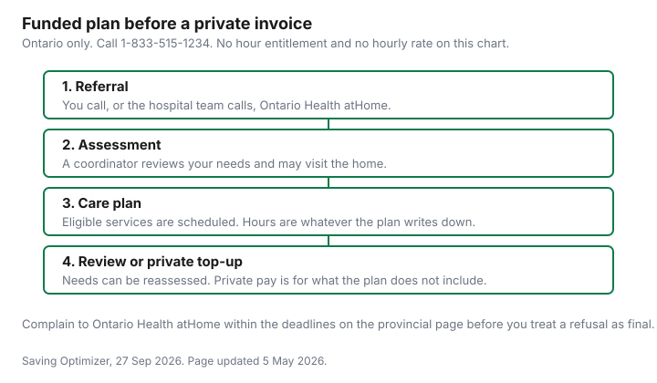

Healthcare · Canada
Publicly Funded Home Care in Ontario: How to Get It and What You'll Pay for Private Top-Ups

Families often get a private invoice before anyone has asked Ontario Health atHome whether the visit is already funded. The Ontario home and community care page, updated 5 May 2026, says the province pays for home care if you qualify. It does not publish a number of hours. It also says you can pay a private company. This page is the order of those two bills, for Ontario only. No private hourly rate is listed here, so none is printed. This is not medical advice and not tax advice.
Key takeaways
- Call Ontario Health atHome at 1-833-515-1234. A case manager or care coordinator assesses you, may visit the home, and writes a care plan if you are eligible. The plan uses your assessed needs and the services available in your community.
- Funded professional services include nursing, physiotherapy, occupational therapy, speech-language pathology, social work, and help with eating. Personal support covers washing, dressing, transfers, and toileting. Homemaking, including housecleaning, is only if you also receive personal support or need constant supervision because of a cognitive impairment or an acquired brain injury.
- General housekeeping on its own is not the usual service. Ontario Health atHome’s own site says it does not typically provide general housekeeping and can help you find private-pay or subsidized options. Community programs can charge a client co-payment.
- If you disagree, complain to Ontario Health atHome. The response deadline on the provincial page is 60 days, or 10 days when the complaint alleges abuse or neglect that caused harm or a risk of harm. Eligibility, the amount of a service, exclusion of a service, and termination can go to the Health Services Appeal and Review Board.
- A private top-up can be a medical expense, not a refund of the invoice. When the disability amount is also claimed, Medical Expenses 2025 caps the attendant-care salaries you claim with it. The long-term care guide records that booklet’s limits. Confirm the guide year you file.
What Ontario Health atHome provides: nursing, personal support, therapy
Ontario Health atHome provides home care and helps people reach community support. The same organization places people in long-term care homes and can refer you to other health and social services. The provincial page lists professional services you may be eligible for: nursing, including medications, bandages, and recovery; physiotherapy for mobility, circulation, and pain; occupational therapy to make daily tasks and moving around the home easier; speech-language pathology; social work for caregivers and family conflict; and help assessing eating habits and building an eating plan. Personal support, if you are eligible, covers washing and bathing, mouth care, hair, preventative skin care, routine hand or foot care, transfers, dressing, eating, and toileting.
Homemaking is narrower than “someone to clean.” The page says you may be eligible if you are also receiving personal support, or if you need constant supervision because of a cognitive impairment or an acquired brain injury. The list is housecleaning, laundry, shopping, banking, paying bills, planning and preparing menus, and caring for children. Ontario Health atHome’s homepage, as of 27 Sep 2026, answers a housekeeping question directly: it does not typically provide general housekeeping, and it can help you locate private-pay or subsidized services. Those two sentences are why a cleaning invoice is not automatically a failed public claim. Ask whether the task is homemaking inside a personal-support plan, or housekeeping you will buy yourself. Hospital discharge is a separate door on the same homepage: the hospital team, which may include a care coordinator, decides whether nursing, personal support, medication management, or rehabilitation is needed to go home. The funded physiotherapy guide is a clinic route with its own eligibility. Do not assume a home visit and a clinic visit are the same approval.
How to get assessed and what drives the hours you're offered
The page’s steps are a phone call, a discussion, an eligibility decision, and a plan. Call 1-833-515-1234, or use the Ontario Health atHome map to find care in your area.
A case manager or care coordinator makes an initial assessment. A coordinator may visit the home. Eligibility is based on your assessed needs and on the services available in your community. If you are eligible, the coordinator works with you and anyone you designate to write a plan. The plan is supposed to consider preferences based on ethnic, spiritual, linguistic, familial, and cultural factors. Care is then scheduled through Ontario Health atHome staff or a service provider organization. If your needs change, the coordinator reassesses and may change the plan. You can call them when that happens.
Nothing on the page as of 27 Sep 2026 states a universal number of hours, a weekly cap, or a minimum visit. The drivers the page does name are the assessment and local supply. Write down what was offered, for which tasks, and for how long, and ask what would change the plan. The same phone number starts a long-term care placement conversation, which the homepage describes as an assessment and an application, not as extra home-care hours. The long-term care guide is the co-payment if that is the setting. The turning-65 guide is the drug and dental start dates. Age 65 does not, on this page, create a home-care hour entitlement. If you are not eligible, Ontario Health atHome may still refer you to other resources. That referral is not a bill you have to accept.
Gaps in publicly funded care, and when families top up privately
The provincial page says that if you qualify, the government pays for home care, and that community support services can have a client co-payment. It also says you can pay for your own care through private companies.
Community services on the same page include meals, transportation, caregiver respite, adult day programs, home maintenance, and friendly visiting, with a note that some programs charge a fee and some exist only in larger communities. Assisted living is described as more service than a scheduled Ontario Health atHome visit, and less than the 24-hour nursing of a long-term care home. It is another assessment, not a private rate card.
A top-up is the care the plan does not include. Housekeeping that is not homemaking inside a personal-support or supervision plan is the example the organization’s own site gives. Extra personal-support hours the coordinator did not put on the plan are the other common gap, and the page does not price them. Family-managed home care, also called self-directed care, is not the same as a private top-up. If you are eligible for Ontario Health atHome services, you may get funding to pay a qualified provider you choose for the services in the care plan. You find, hire, and pay them. The page limits that route to children with complex medical needs, adults with an acquired brain injury, home-schooled children with qualifying health-care needs, and extraordinary circumstances. Ask whether you are on that route before you treat a private invoice as the only option. End-of-life care at home, including nursing, personal support, supplies, and some equipment, is listed as its own set of services. Read that list before you buy the same item privately. A walker or wheelchair is a different program. The mobility-aid guide is the Assistive Devices Program and the loan programs. Do not put a device deposit on a home-care invoice and hope one approval covers both.
Hiring privately: agencies vs direct hire and employer obligations
Two private paths show up in real households, and the provincial page only describes one of them in any detail. Paying a company is the sentence “you can also pay for your own care through private companies.” The company invoices you.
You are a customer of that company. Family-managed care is the other path, and it is still a public funding route: you are responsible for finding, hiring, and paying the provider, and for the administrative tasks that go with that. The page does not set a wage.
A direct hire outside either route can make you an employer. This guide does not cover the Canada Revenue Agency payroll pages or the Ontario Employment Standards Act rates for a privately hired attendant, so it does not print a CPP rate, an EI rate, a minimum wage, or a vacation-pay percent. Confirm those with the CRA and with Ontario employment standards before you withhold anything or decide you do not have to. Ask the person or the agency, in writing, who employs the worker, who carries workplace insurance, and what happens if the worker cancels. An agency quote and a neighbour’s hourly quote are not comparable until those lines are on both. No hourly rate from either kind of seller was published as of 27 Sep 2026.
Tax help: the medical expense tax credit for attendant care, and caregiver credits
Private home care is not automatically a deduction that removes the whole invoice from your income. It is a candidate medical expense, and the credit applies only above a threshold.
Medical Expenses 2025 uses the lesser of 3 percent of line 23600 or $2,834 in its examples. The medical expense guide is how the threshold and the spouse’s claim work. Amounts Ontario Health atHome funded, or an insurer reimbursed, are not yours to claim a second time. The long-term care guide records the attendant-care fork from that same 2025 booklet, opened for that article on 26 Sep 2026: if you claim full fees for full-time care in a nursing home, nobody claims the disability amount for that person; if you claim the disability amount, you claim only the attendant-care salary portion, up to $10,000 federally, or $20,000 if the person died in the year, and up to $17,627 for an Ontario return, or $35,253 if the person died. Those are the 2025 guide’s numbers. Use the guide year that matches the return. A home-care salary is not a nursing-home fee. Read the attendant-care page against the invoice before you copy the nursing-home rule onto a private personal-support bill.
Receipts still have to show who was paid. The medical expense guide says a receipt must show the name of the company or individual, and a card slip that only says “care” does not meet that test. A Canada caregiver amount is not printed here as a dollar figure. The tax-credits guide is the household checklist, including the caregiver lines it actually prices. A renovation that makes the home safer is the home accessibility credit, which the mobility guide covers. Do not add that credit here as if it paid for a personal-support hour. This is not tax advice.
Planning checklist
Use the funded assessment before you sign a private contract. The table is what the pages as of 27 Sep 2026 say is public, and what they leave as a private question. The private column has no rates because none are listed here.
| Service | Publicly funded? | How to request it | Private top-up |
|---|---|---|---|
| Nursing, therapy, social work, eating help | If the assessment says you are eligible. The government pays. | Call 1-833-515-1234. A coordinator may visit. The plan names the service. | A private company is allowed. No rate is listed here. |
| Personal support | If eligible: washing, dressing, transfers, eating, toileting, and the other daily tasks on the page. | Same phone call and the same care plan. Hours are not a published entitlement. | Hours the plan does not include are the gap families pay. No rate is listed here. |
| Homemaking | Only with personal support, or with constant supervision for a cognitive impairment or an acquired brain injury. | Ask the coordinator to say whether homemaking is on the plan. | Housecleaning outside that rule is the gap the organization’s site points to private-pay. |
| Family-managed home care | Funding for the care-plan services, if you are in a listed group and eligible. | Ask Ontario Health atHome. You still find, hire, and pay the provider. | This is not the same as an unfunded private contract. No wage is listed here. |
| Community supports | Some are funded and some charge a client co-payment. Not every service exists in every town. | The coordinator can refer you. Some programs you contact directly. | A fee, where the page says a program charges one, is not a home-care hourly rate. |

Sources
- Ontario, “Home and community care,” updated 5 May 2026. Eligibility, the phone number, the service lists, family-managed care, community co-payments, the 60-day and 10-day complaint deadlines, and the Health Services Appeal and Review Board grounds and phone numbers.
- Ontario Health atHome homepage, as of 27 Sep 2026. Hospital discharge supports, the same phone number for long-term care placement, and the statement that general housekeeping is not typically provided.
- Canada Revenue Agency, Medical Expenses 2025, threshold examples of the lesser of 3 percent of line 23600 or $2,834. Attendant-care salary caps of $10,000 federally and $17,627 for Ontario, when the disability amount is also claimed, as recorded from that booklet on the long-term care guide (as of 26 Sep 2026). Confirm the guide year you file.
- No private hourly rate, no universal hour cap, and no Canada caregiver dollar amount is listed on this page.
Frequently asked questions
How do I get home care in Ontario?
Call Ontario Health atHome at 1-833-515-1234, or use the map on their site. A case manager or care coordinator assesses your needs, may visit the home, and writes a care plan if you are eligible. The provincial page updated 5 May 2026 says the government pays for home care when you qualify. If you are not eligible, they can still refer you to other resources.
How many hours of home care will I get?
The page does not publish a universal number of hours. The coordinator decides from your assessed needs and from the services available in your community, and the plan can be reassessed if your needs change. Ask for the tasks and the time in writing on the care plan. A private invoice is not a substitute for that assessment.
Can I pay for extra home care privately?
Yes: the Ontario page says you can pay a private company, and some community programs charge a client co-payment. Ontario Health atHome says it does not typically provide general housekeeping and can help you find private-pay or subsidized options. No private hourly rate is listed here, so none is printed. Get the funded assessment first so you are not paying for hours the plan would have covered.
Is private home care tax deductible?
It can be a medical expense, which is a credit on the amount above a threshold, not a refund of the invoice. Medical Expenses 2025 uses the lesser of 3 percent of net income or $2,834 in its examples. If you also claim the disability amount, that booklet’s attendant-care salary cap is $10,000 federally, or $20,000 if the person died, and $17,627 on an Ontario return, or $35,253 if the person died. Confirm the guide year, keep the receipt that names who was paid, and treat this as education rather than tax advice.
What if I disagree with my care plan?
Complain to Ontario Health atHome. They must tell you how, review the complaint, and respond within 60 days, or within 10 days if it alleges abuse or neglect that caused harm or a risk of harm. You can appeal to the Health Services Appeal and Review Board when the dispute is eligibility, the amount of a service, exclusion of a service, or termination. The board’s Toronto number is 416-327-8512 and the toll-free number is 1-866-282-2179.
Researched and drafted with AI assistance and fact-checked against official Canadian sources. How we create content.